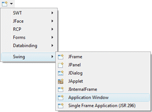
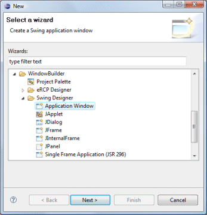
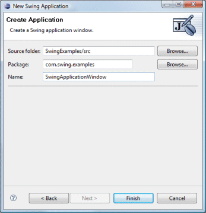

|
The Swing Application Window wizard creates
a main class that instantiates and shows a top-level JFrame. The wizard can be
selected from the drop down wizard menu or from the
Eclipse New wizard.
To use the wizard, select the project source folder and package to contain the class. Then enter the class name and hit the Finish button.
|
|
  |
|
javax.swing.JFrame; public class SwingApplicationWindow { private JFrame frame; public static void main(String[] args) { try { SwingApplicationWindow window = new SwingApplicationWindow(); window.frame.setVisible(true); } catch (Exception e) { e.printStackTrace(); } } public SwingApplicationWindow() { initialize(); } private void initialize() { frame = new JFrame(); frame.setBounds(100, 100, 450, 300); frame.setDefaultCloseOperation(JFrame.EXIT_ON_CLOSE); } } When editing Swing Application Windows, all of the standard Swing layouts, containers, widgets and menus are available. Custom or third party controls may be added via the Choose Component command. You may also preview your frame using different look and feels using the drop down look and feel list in the toolbar. |